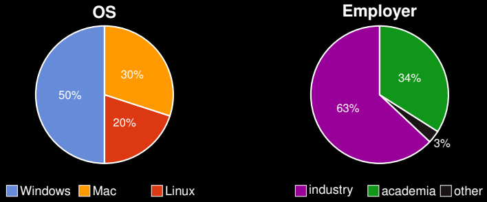
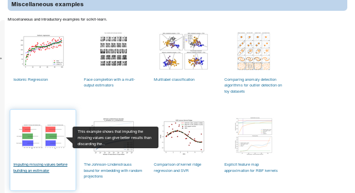

scikit-learn
Loïc Estève

\(\)
About me

Outline
- short introduction to Machine Learning
- scikit-learn
- the tool
- the project
- scikit-learn aspects for cybersecurity
Machine Learning introduction
Machine Learning example: house prices
| type | # rooms | surface m2 | public trans | sold k€ | | (category) | (int) | (float) | (bool) | (float) | |------------|---------|------------|--------------|---------| | appartment | 3 | 50 | True | 450 | | house | 5 | 254 | False | 430 | | duplex | 4 | 68 | True | 712 | | appartment | 3 | 32 | False | 234 |
| appartment | 3 | 33 | True | ??? | | house | 4 | 210 | True | ??? |
Machine learning cybersecurity use cases
- Android malware detection
- DDoS attack detection
- intrusion detection system
Some of the challenges:
- feature extraction, highly dependent on the use case
- costly annotations
- adversarial setting
scikit-learn
scikit-learn chosen quotes
Scikit-learn est la référence en Machine Learning que de nombreuses entreprises utilisent. Chez OVHCloud, il est notamment utilisé pour le monitoring des 21000 et quelques équipements réseaux de nos data centers.
Olivier Nicol, Lead Data Scientist, OVHCloud
scikit-learn chosen quotes
scikit-learn est le framework de référence en machine learning et un des premiers frameworks open-source de qualité industrielle.
Florian Douetteau, CEO, Dataiku
scikit-learn chosen quotes
scikit-learn nous sert à accélérer les remboursements de sinistres automobiles ou à détecter les fraudes à l’assurance. C’est le couteau suisse du machine learning !
Marcin Detyniecki, directeur de la R&D, Axa
scikit-learn chosen quotes
Parmi les avantages de la technologie scikit- learn, on trouve l’ergonomie, la simplicité d’usage, et la qualité de la documentation, distinctement saluée par l’ensemble de la communauté.
Mehdi Benchoufi, Chef de clinique Hôpital Hôtel Dieu
scikit-learn vision: an enabler

- Machine learning for everyone
- High quality Pythonic library
- Community-driven development
scikit-learn website stats
scikit-learn users
user survey from 2015
scikit-learn users (academia)
actually 60k+ citations today
Widely used in: neurosciences, astronomy, geosciences, genomics, etc …
scikit-learn users (industry)
- Axa: automatisation of claims treatment, fraud detection
- Dataiku: core part of their Data Science Studio product
- Change.org: email campaign targeting
- Saint-Gobain: automatise some of their factory processes
- many others …
scikit-learn strengths
Easy to use:
from sklearn.ensemble import RandomForestClassifier
classifier = RandomForestClassifier()
classifier.fit(X_train, y_train)
y_test = classifier.predict(X_test)
scikit-learn strengths
Easy to use:
from sklearn.svm import SVC
classifier = SVC()
classifier.fit(X_train, y_train)
y_test = classifier.predict(X_test)
- Consistent API for estimators
scikit-learn strengths
Easy to use:
from sklearn.svm import SVC
classifier = SVC()
classifier.fit(X_train, y_train)
y_test = classifier.predict(X_test)
- Consistent API for estimators
- Fast: Numpy, Cython, OpenMP
scikit-learn strengths
Easy to use:
from sklearn.svm import SVC
classifier = SVC()
classifier.fit(X_train, y_train)
y_test = classifier.predict(X_test)
- Consistent API for estimators
- Fast: Numpy, Cython, OpenMP
- great documentation: scikit-learn.org
Gallery of examples
Example

API documentation

User guide

Community
Contributors
- ~2500 total contributors, ~30 monthly contributors
- recurring tutorials + sprints at conferences
- trying to bring more diversity through DataUmbrella + WiMLDS sprints
Full-time maintainers
- crucial to consolidate the project
- Inria : one full-time engineer since the beginning of the project (~2010)
- scikit-learn at Inria today: ~5 full-time engineers
- besides academia: Hugging Face, QuantSight, NVIDIA
- besides maintainers: one recent hire for community management
scikit-learn foundation @ Inria
Launch Sept 2018, very fruitful collaboration after 4 years
companies: better visibility for software they rely on, good for Public Relations and recruitment
scikit-learn: hire maintainers to consolidate project, useful feed-back from advanced users
Scientific Python ecosystem
Someone else may solve your problems (Dask for distributed computing, conda-forge for user-friendly packaging, Python 3.11 for more user-friendly error messages …)
Many people working across projects (scikit-learn maintainers contributing upstream (numpy, Scipy, Python, …) and downstream (Dask, dirty-cat, …)
scikit-learn aspects relevant for cyber-security
anomaly detection
IsolationForest, LocalOutlierFactor, and others
https://scikit-learn.org/stable/auto_examples/miscellaneous/plot_anomaly_comparison.html
anomaly detection
https://scikit-learn.org/stable/auto_examples/ensemble/plot_isolation_forest.html
SecuML use case
https://github.com/ANSSI-FR/SecuML
ANSSI project: expert in the loop graphical tool (annotation, model training, model evaluation)
scikit-learn used for:
- model training and evaluation
- hyperparameter tuning
- user-defined clustering to label many instances at once
innovation without having to ask first
SecuML use case
scikit-learn
Vision: Machine learning as a means not an end
Versatile library: the right level of abstraction. Close to research, but seeking different tradeoffs
Numpy arrays as data containers. Fast enough.
Ensure code quality and maintainability
Formations Inria Academy
- débutant : 2 demi-journées (créer et évaluer une pipeline typique de machine learning avec scikit-learn)
- avancée: 4 demi-journées (modèles linéaires, arbres de décision, modèles d'ensemble, évaluation de modèles)